-
 Work Queue
Work Queue
-
My Ticket
Create a Ticket for your problem
Your Problem
Description
Attachment
Image files such as jpg, jpeg, png and svg etc...
Drop your image here or click to upload
Image files such as jpg, jpeg, png and svg etc...
Drop your image here or click to upload
01:00:00
What is the shortcut to add a new object in Blender?
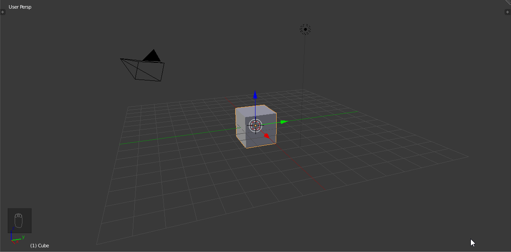Shift + A
Ctrl + A
Alt + A
A
Which of the following is a primitive object in Blender?
Tree
Car
Cube
Character
What mode must you be in to move, scale or rotate an entire object?
Edit Mode
Object Mode
Sculpt Mode
Pose Mode
What does the "G" key do in Blender?
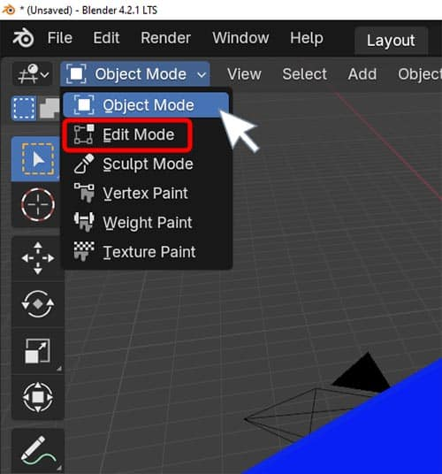Group objects
Grab/move the selected object
Generate a mesh
Go to camera view
Which axis is represented by the red line in the 3D Viewport?

X
Y
Z
W
What is the purpose of the "Tab" key in Blender?
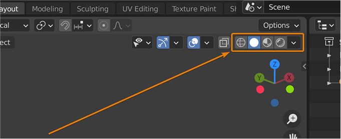Opens the toolbar
Switches between Object and Edit Mode
Opens the render settings
Duplicates the object
Which tool is used to change the size of an object?
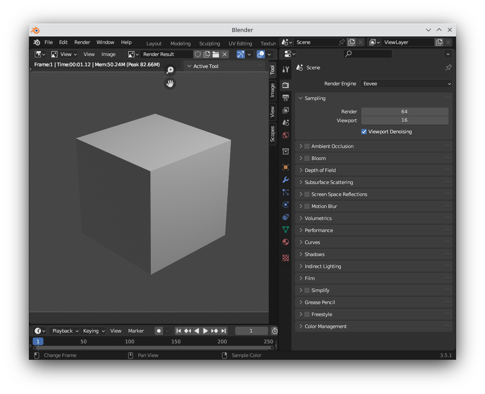G
R
S
T
What does the "Z" key do in the 3D Viewport?
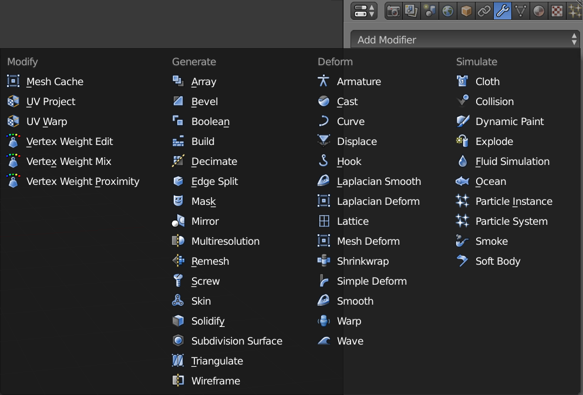Zooms in
Switches shading modes
Opens the side panel
Switches to wireframe view
How do you duplicate an object in Blender?
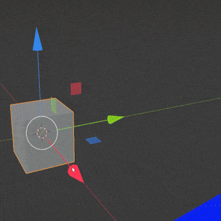Ctrl + D
Shift + D
Alt + D
D
What is the default unit of measurement in Blender?

Inches
Meters
Centimeters
Blender Units
Which of the following is NOT a basic transform operation in Blender?
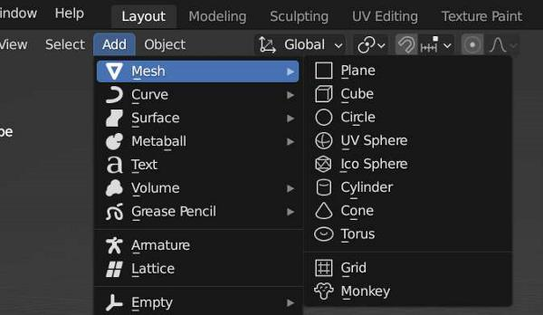Move
Scale
Extrude
Rotate
What does the "E" key do in Edit Mode?
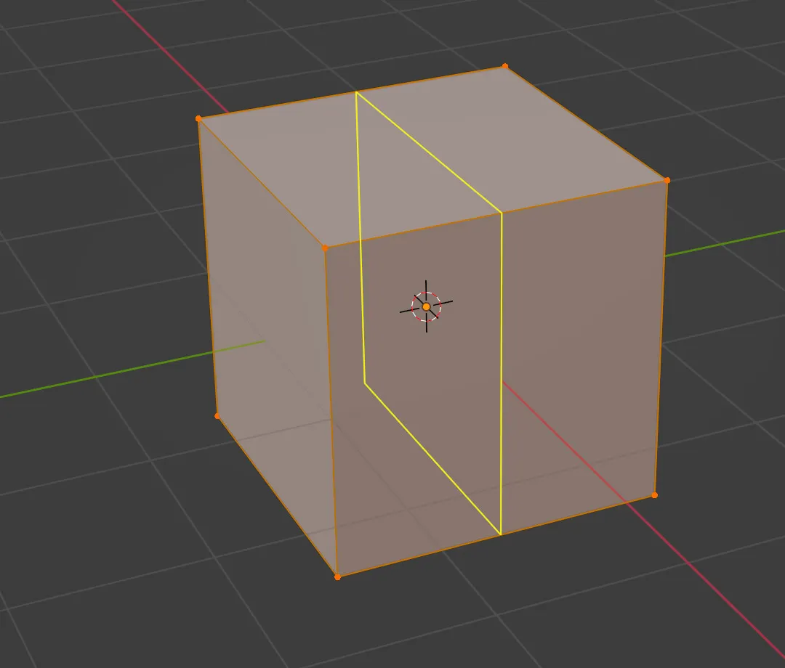Export the object
Enable geometry
Enable snapping
Enter camera view
What is the purpose of the 3D Cursor in Blender?
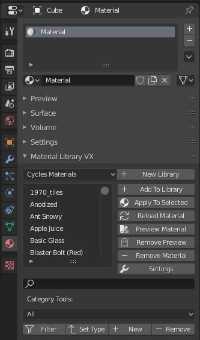It shows the camera's position
It marks where new objects will be added
It selects all objects
It controls lighting
Which of the following is a valid way to delete an object?
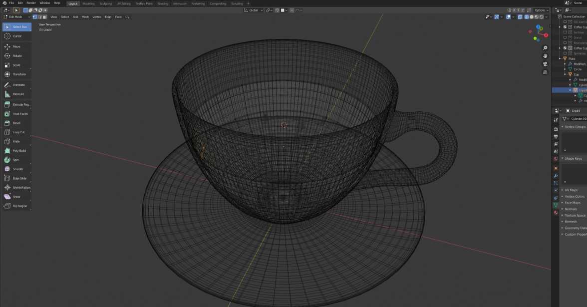Z
X
C
V
How do you scale an object uniformly in Blender?
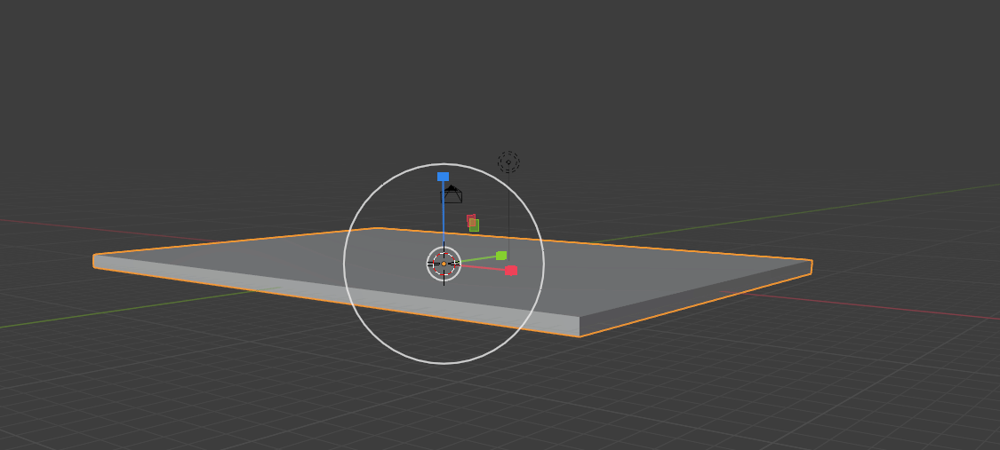Press S and drag the mouse
Press G and drag the mouse
Press R and drag the mouse
Press E and drag the mouse
What is the purpose of the 'Mirror' modifier?

To create a mirrored copy of the object
To change the object's color
To rotate the object
To delete the object
Which key do you press to undo an action in Blender?
Ctrl + Z
Ctrl + Y
Ctrl + S
Ctrl + A
What does the 'Bevel' tool do?
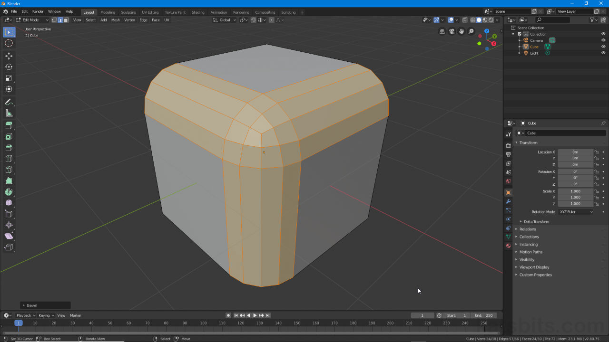Rounds off the edges of the mesh
Deletes the edges of the mesh
Rotates the mesh
Scales the mesh
How do you join two objects into one in Blender?
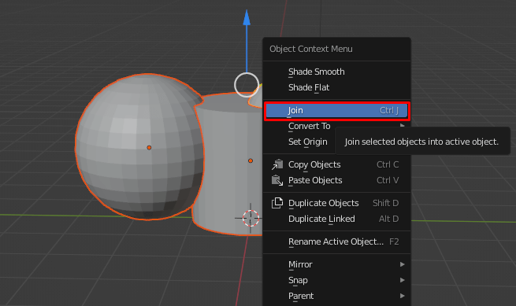Press Ctrl + J
Press Ctrl + G
Press Ctrl + M
Press Ctrl + P
Which workspace is used for animating objects in Blender?
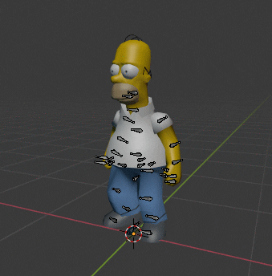Modeling
Sculpting
Animation
Shading
Need help?